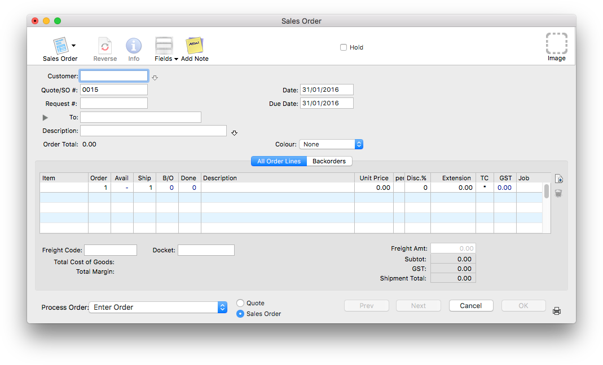
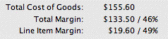
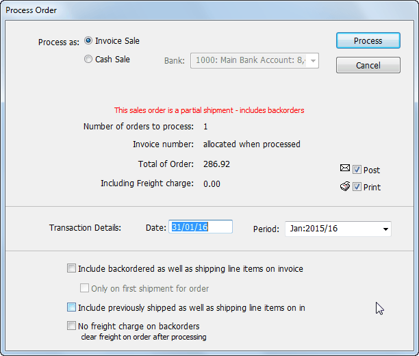
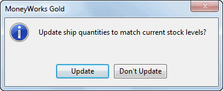
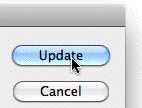
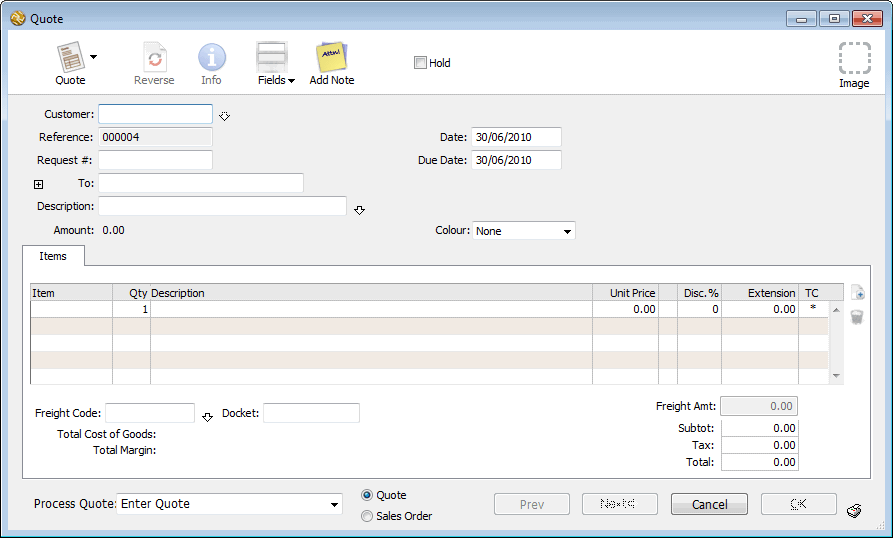
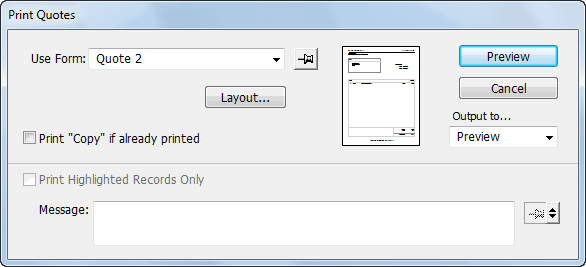
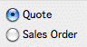
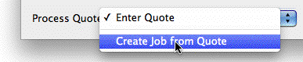
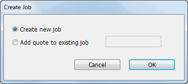

Use a sales order to process a sale through MoneyWorks. Sales orders integrate into the stock system, allowing backordering of goods that are out of stock.
When you enter a sales order, it is held in the system until you are ready to ship the goods ordered (or provide the service). At this point you specify how many goods are being shipped, and process the sales order. The processing can be done as the orders are entered, or as a batch some time later.
Note: If you receive purchase orders from a customer they (normally) need to be entered as sales orders in MoneyWorks. The entry of orders (or supplier invoices) received as PDF files can be automated using Invoice Automation, which is available as an optional MoneyWorks Service.
To enter a sales order:
In the Transaction list, create a new transaction by clicking the New
button or pressing Ctrl-N/⌘-N
If necessary set the transaction Type to Sales Order
Pressing Alt-Shift-7/Ctrl-Shift-7 is a keyboard shortcut for this.

The customer name details will be entered automatically.
If you do not enter a valid customer code, the choices list will be displayed when you tab out of the field. Use this to find the correct code or to create a new one.
If the Requires Order Number option is set on the customer record, you will not be able to accept the order if this filed is blank.
Enter the date by which the customer requires the goods or services into the Due Date field
If the goods or services are not to be delivered to the customer’s normal address, change the delivery address details —see Delivery and Mail Addresses
Enter an optional description for the order
Depending on the design of your forms, this may appear as an annotation on your printed packing slip or invoice
Press ctrl-tab (Mac) or ctrl-` (Win) to move to the Product code field on the detail line
You need to record details of each item that you are selling. This is done in the detail lines of the sales order, and includes the quantity and code of each product required—the product description and price details are entered automatically for you when you enter a product code.
If you enter an invalid code (or leave the code blank), the product choices window will be displayed. You can choose the product from this list, or click the New button to record details of a new product. If you enter the product’s barcode here, it will be replaced by the stock code.
The product description and price are entered automatically.
If the items are stocked goods, the current stock level is shown in the Avail field, and the amount that can be shipped (the lesser of the order and the avail amounts) is inserted into the Ship field, with the amount that will be backordered shown in the B/O field.
Note: The quantity shown in the SOH column is the actual stock quantity from the product record. To view the available stock (i.e. stock on hand less the quantity marked to ship on other sales orders), click the SOH column heading. The heading will change from SOH to Avail. Click on the heading again to change back to SOH. Note that the MoneyWorks will remember your preference for this when entering/viewing other sales orders.
Note: If Location Tracking is turned on, the quantity in the SOH (or Avail) column is the quantity at the designated location, not the total stock on hand.
Note: Backordered items will not be shipped, but will be held over until the items are in stock. You can override the Ship amount if need be), but you will be warned that you are going into negative stock.
The default sell price is taken from the pricing matrix in the product record, based on the customer’s Price Code.

Note: The margin for the line being entered (as well as for the transaction as a whole) is displayed for Sales Orders and Quotes at the bottom right of theentry screen if the Show Margins option in the Document Preferences is on. This can be disabled for individual users by resetting the Show Margins privilege.
If freight is to be included as part of the sale, you should specify the freight charge in the freight area —see Freight charges.
The printer icon will be displayed on the Next and OK buttons, indicating that the order will be printed immediately one of these buttons is clicked.
If you have selected the Receive Deposit with Order option, you will be prompted for the deposit details when the order is saved. As this is analogous to the Deposit on a purchase order (except that a Receipt is generated), you should read the section on Paying a Deposit with Order to understand how deposits operate and how to alter their amount or cancel them.
If you had elected to print this order, the Print Form window will be displayed. Set the form to the desired type, then print it.
If you clicked the Next button, a new sales order entry screen will be displayed, otherwise the sales order list will be shown (with the current order highlighted). If you clicked Cancel, the order is not saved.
The order you have created will remain in your sales system until either you ship the goods or delete the sales order. Once all the goods ordered have been shipped, the order will appear in the Sold tab.
Note: Sales orders are not accounting transactions, and hence they can be modified or deleted at any time (provided there is no attached deposit).
You can “ship” whatever goods are available from the open order by selecting Ship Goods with Invoice from the Process Order pop-up menu. This causes MoneyWorks to create and post a sales invoice for the items, which in turn reduces stock levels for any stocked items.
As of MoneyWorks 9.1, it is possible to do pick goods for an order using an iPhone/iPad using MoneyWorksGo and the Remote Warehouse MoneyWorks Service. The order in MoneyWorks is automatically updated with the picked quantities.
To ship the goods for a single sales order:
You may be prompted to update the ship quantities (see Updating the Ship Quantities on a Sales Order for what this means).
Set the Process Order pop-up menu to Ship Goods with Invoice
The process icon will be displayed on the OK and Next button, indicating that the goods will be shipped when either of these buttons are clicked.
These are the actual quantities that you are going to take out of stock (for stocked items) and ship. Note that MoneyWorks will allow you to ship more stock than it thinks you have if you override the ship quantity.
The Process Order window is displayed.

This is used to specify how the order will be transferred into a sale for accounting purposes.
Invoice Sale: A sales invoice will be generated for this sale.
Cash Sale: A receipt against the nominated bank account will be generated.
Post: Set this if you want the resultant transaction to be posted. Inventory levels will not be adjusted until the transaction is posted.
Transaction Details: If you want the resulting transaction to have a different date or period than the current date, you can set these here.
Include backordered... If set, a line will be shown on the invoice/receipt for each backordered item, showing that they are backordered.
Only on first shipment... If set, the backordered lines will only be shown on the invoice/receipt for the first shipment of the goods. Subsequent transactions will not show the backordered lines.
Include previously shipped ... If set, any previously completed lines will be shown on the resulting invoice/receipt. These are otherwise suppressed.
No freight charges on backorders: If set, freight (as specified in the freight section of the order) will only be charged on the first shipment, and not on any backordered items.
An invoice (or receipt) will be raised for the sale (and optionally posted), causing any inventoried items to be removed from stock. If this completes the order, it will be moved from the Sales Order tab and to the Sold tab.
Between the time that an order is entered and the time you come to ship it, the stock levels for the items on order may have changed.

When you open a sales order (e.g. by double- clicking it), MoneyWorks will check if there are any backorders in the order, and also check the stock availability. If it can ship more (or less) than when the order was saved, you will be prompted to update the ship quantities6.Clicking Update will adjust the ship quantities based on current stock availability. Note that MoneyWorks will allow you to manually override the shipping quantities, so that you can (if you want) ship more than MoneyWorks thinks it has in stock. This will make the stock on hand for the item negative.
To update the ship quantities on multiple sales orders:
The orders with the highest priority should be at the top of the list.
The Ship Orders dialog will be displayed

Change the Process button to Update by holding down the Option key (Mac) or the Shift key (Windows).
MoneyWorks will update the ship quantities on the highlighted sales orders, starting with the first highlighted order and working down.
Caution: Make sure the Option or Shift key is held down and the button is labelled Update before clicking, otherwise you will process the orders.
Preparing a quote for the supply of goods or services is similar to preparing a sales order—in fact quotes and (unprocessed) sales orders are interchangeable.
A new transaction window will open.
Pressing Alt-Shift-6/Ctrl-Shift-6 is a keyboard shortcut for this.

Enter the details as for a sales orderNote that there are no available, ship or backorder columns.
Click the Printer icon next to the OK button.
The printer icon will be displayed on the Next and OK buttons, indicating that the quote will be printed immediately when the button is clicked.
Click the OK (or Next) button
The Print Quotes settings window is displayed.

Note: For details on emailing the quote refer to Emailing Forms.
If your quote is accepted, you can turn the quote into a sales order or into a job, depending on what is necessary to fulfil the quote.

Click the Sales Order radio button, and click OKThe quote will be changed to a sales order, and will be found under the sales order tab.
Set the Process Quote pop-up menu to Create Job from Quote

The process icon will be displayed on the OK and Next buttons, indicating that the Quote will be “processed” when either of these is clicked.
The Create Job confirmation window will be displayed.

By default, a new job will be created with the next available job code. If you want to incorporate the details of this quote into an existing job, select the Add quote to existing job option and enter the code for that job (if you enter an invalid code, the Job choices list will be displayed).
Click OK
The job will (if necessary) be created against the customer in the quote. The total of the quote (ex Tax) will be transferred to the total quoted for the job. The individual detail lines on the quote will be transferred to the budget for the job.
The original quote (which remains in the quotes list) is updated to show the job number in the Analysis field and in the job column of each line.
You can use an existing quote as a template for others, allowing you to build a library of “standard” quotes. There are various ways you can manage this, but some suggestions are:
Put Quotes that are templates on Hold. This means they cannot accidentally be processed;
Make a dummy customer for the template quotes, so they are easily distinguishable from real ones. Perhaps even have a special colour for them;
Set up list filters—see Creating Filters so you can easily view just your template quotes, and just your real quotes;
When you base a real quote on a template, duplicate the template to create a new quote, and change any details on the new quote.
Note: When you duplicate an existing quote, you will be asked if you want to update the sell prices. Clicking Update will change all pricing on the Quote to reflect the current prices in the product file.
Sales orders and quotes can be processed individually by opening each one and clicking on the Process icon as described above, or can be batch processed from the list itself. This is analogous to posting transactions.
To Batch Process:
Use the Ctrl/⌘ key to make your selection.
Click Create in the confirmation dialog box that is displayed.
A separate job and appropriate budgets will be created for each quote that was selected.
The Process Orders dialog box will be displayed—see Shipping Goods for details of this. This is used to specify how the order will be transferred into a sale for accounting purposes.
Note: You can only specify the sale type if you are processing a single order. If you are processing more than one order, the sales will be treated as Invoice sales.